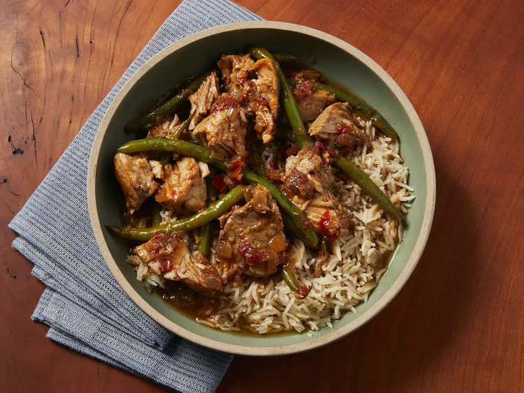

Sinigang Recipe

Description
Sinigang is a Filipino soup cooked with pork. Serve with rice and for additional sauce, use soy or fish sauce.
If you want to, you can add what Filipinos call gabi gabi, which is a small taro root. When peeled they look like potatoes.
You can add five to six of them when you add the water and make sure they are cooked through. Take them out when they are cooked because they can get too soft.
Ingredients
- 1 tbsp. vegetable oil
- 1 small onion
- 1 tspn. salt
- 1 piece fresh ginger
- 2 tomatoes
- 1 lb bone-in pork chops
- 4 cups water
- 1 pck tamarind soup base
- 1/2 lb fresh green beans
Steps:
- Heat vegetable oil in a skillet over medium heat. Add onion; cook and stir until softened and translucent, about 5 minutes. Season with salt.
- Stir in ginger, tomatoes, and pork chops. Cover and reduce heat to medium-low. Turn the pork occasionally, until browned.
- Pour in water and tamarind soup base. Bring to a boil, then reduce heat and simmer until the pork is tender and cooked through, about 30 minutes.
- Stir in green beans and cook until tender.